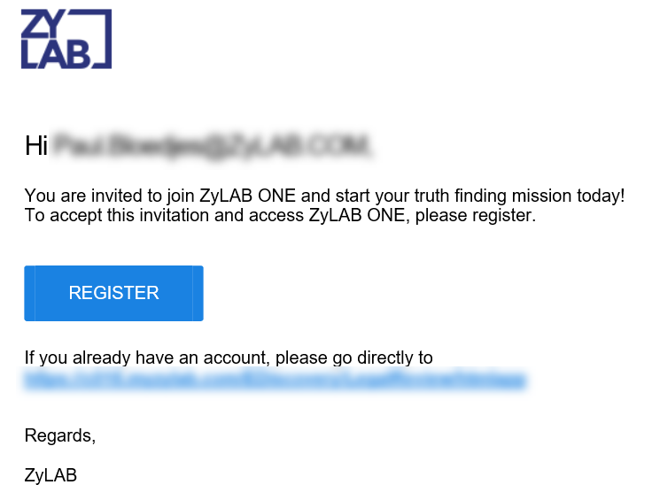
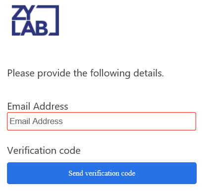
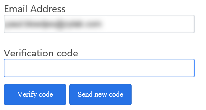
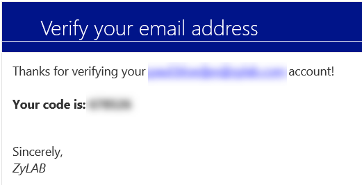

U kunt een account aanmaken in ZyLAB wanneer u een registratiemail hebt ontvangen in uw inbox. Deze wordt verstrekt door uw beheerder. In deze email klikt u op Register om het registratieproces te beginnen. Indien u geen registratiemail hebt ontvangen raden wij u aan contact op te nemen met uw beheerder.

U wordt vervolgens naar een webpagina geleid. Hier dient u uw email adres in te voeren en vervolgens op 'Send verification code' te klikken. Het is van belang dat u hetzelfde emailadres invoert als het emailadres waar u de registratiemail op heeft ontvangen.

Wanneer u op 'Send verification code' heeft geklikt, zal deze verdwijnen en verschijnt er een nieuw tekstvlak.

U heeft ondertussen een nieuwe email ontvangen op uw emailadres. Hierin staat de verificatiecode.

Voer de verificatiecode in het nieuw verschenen tekstvlak in en klik op 'Verify code'.
Let op: Indien u de verificatie code d.m.v. copy/paste in het veld plakt, kan het zijn dat automatisch een extra spatie aan het einde van de code wordt geplakt. Verwijder de extra spatie voordat u op 'Verify code' drukt.
Indien u de code niet heeft ontvangen klikt u op 'Send new code'. U ontvangt dan nog een mail met een nieuwe verificatie code. Hierna dient u een password aan te maken. Houdt hierbij rekening met de volgende vereisten:
Hierna dient u uw wachtwoord ter verificatie nogmaals in te voeren. Klik vervolgens op 'Create'.
ZyLAB werkt met een tweestapsverificatie bij het inloggen, hiervoor dient u uw telefoon te gebruiken.